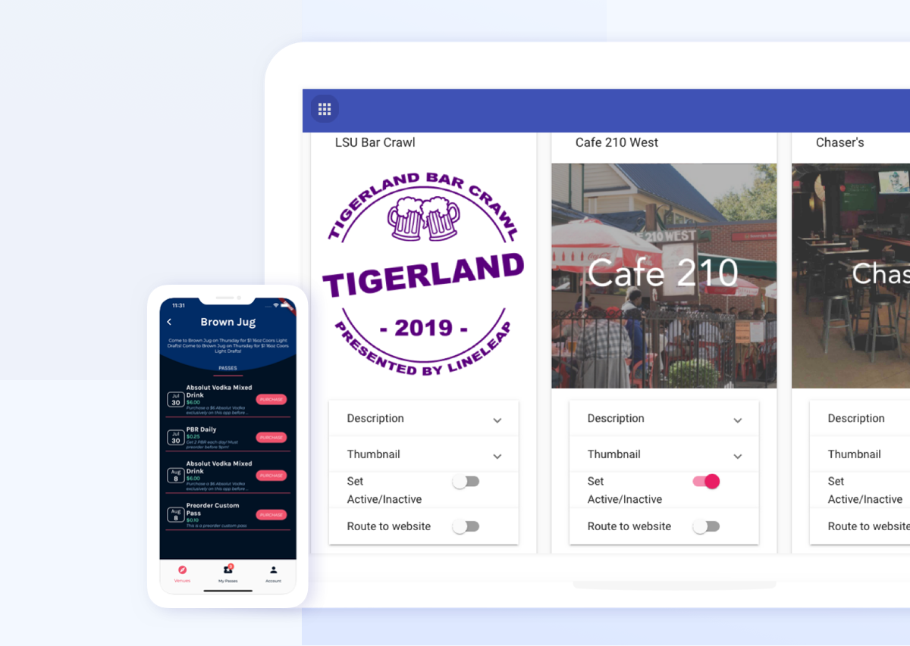
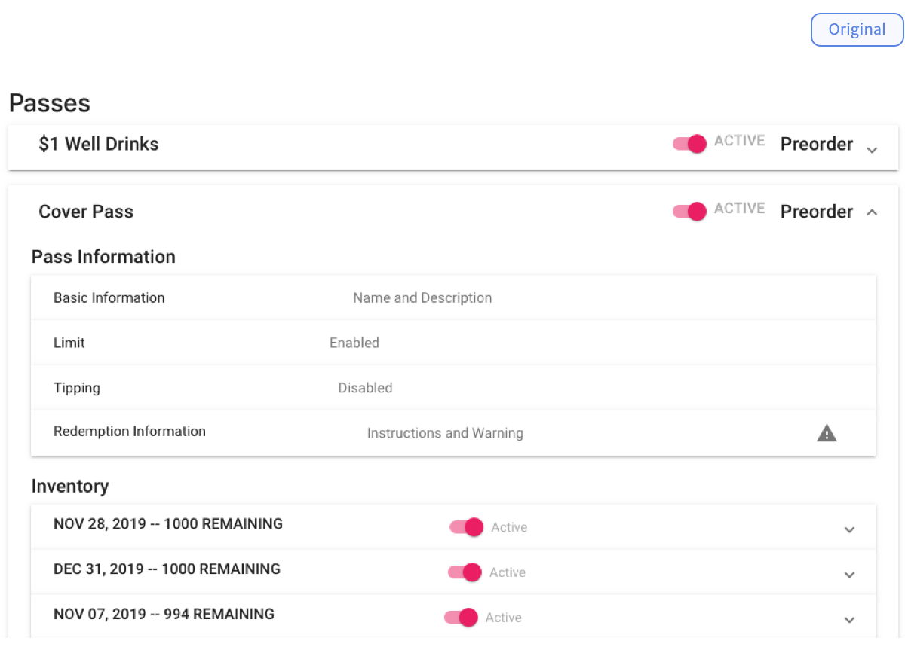
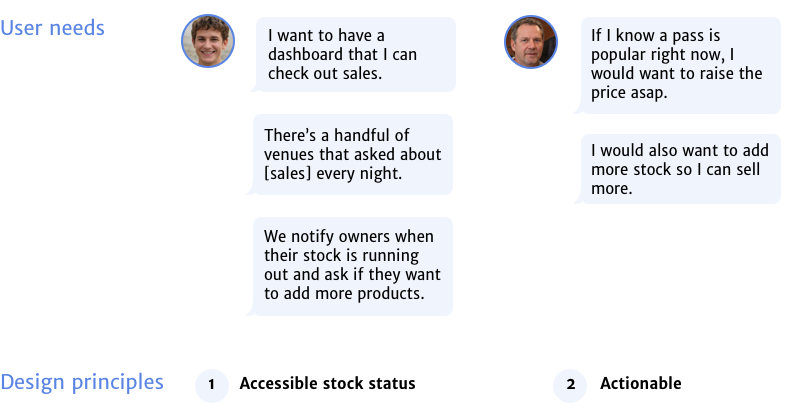
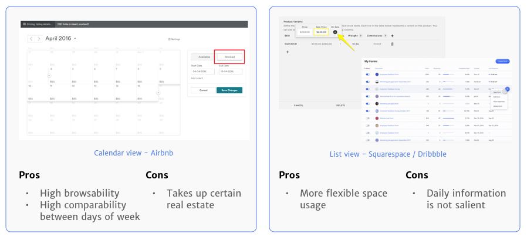
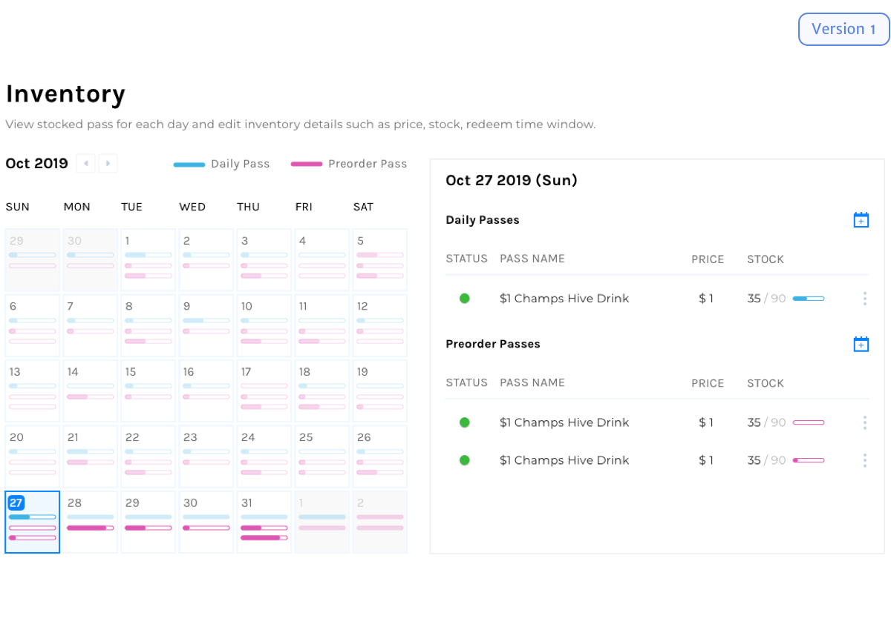

LineLeap Business CMS
As a part-time UX designer for the Zell Lurie Institute for Entrepreneurial Studies at the University of Michigan, I help selected student startups tackle business problems with design solutions under the ZLT program. For Fall 2019, I crafted the design of a business-facing CMS backend for LineLeap, a growing mobile app that offers a one-stop shop for all nightlife purchases.
*The design has been handed off for engineering team's development. I look forward to sharing the final build once available!
Project Duration
1 semester
Sep 2019 - Dec 2019
My Role
UX Desginer, working with a product manager and a software engineer, under the mentorship of the ZLT program manager.
Methods
In-depth interviews
Heuristic evaluation
Affinity diagramming
Comparative analysis
Prototyping
User testing
Tools
Sketch
InVision
Zeplin
BACKGROUND
What is LineLeap and its services?
LineLeap is a student-founded startup that provides a marketplace for bars and nightclubs. On the consumer-facing mobile app, users can purchase and redeem fast passes, drink deals, and more to enjoy a great night out.
LineLeap also works with venue owners to help grow the local nighlife businesses in more than 20 cities. Curently, a few leadership responsible for growth, sales, and marketing manage all venue-facing logistics on a self-built Content Management System (CMS). This includes sending out sales report, creating new products and adding inventory, as well as providing customer support.

The LineLeap Mobile App and the original web CMS backend.
IDENTIFIED CHALLENGES FROM RESEARCH
How might we leverage LineLeap's CMS to grow the revenue and scale of the nightlife marketplace?
After a few weeks of UX research including user interviews, heuristics evaluation, and stakeholder meetings, three major challenges have emerged that determined the project scope.
1. Improve the sclability of the business
- LineLeap team manually updates all venue information upon receiving business owners' requests.
- It has become overwhelming for the startup, increasing cost of labor as the platform's business expands.
2. Increase venue stickiness and revenue with value-added features
- Current interaction with venue owners are limited and non-actionable.
- The platform can and should grow beyond a plain marketplace with its power of data.
3. A redesign of the overall experience to enhance system usability
- Users reported several tasks being tediously redundant and error-prone.
- The system lacks visibility of system status, does not prevent errors, and requires design consistency.
SOLUTION OVERVIEW
From a self-managing admin system to a venue owner-facing business management platform.
Over the semester, I tranformed LineLeap's CMS from an internal administration system to a business-oriented platform that offers analytical data insights and inventory management services to LineLeap's participating venues.
The new design also provides more streamlined experience for LineLeap teams to deal with day-to-day business and content administration.
1. Brand new business analytics dashboard
Get instant overview and summary of your business performance on the LineLeap dashboard.

Major interactions of the business analytics dashboard (venue owner view).
2. Redesigned venue inventory management for business users
Edit the content shown on the app and manage product inventory in real time.

Update the latest content and manage the inventory status.

Create new passes for upcoming events.
3. Real-time status monitoring for webmasters
Manage all venue content for the app at ease with filter and sort features.

Locate and pin an area to easily go back to where you left off.
THE PROCESS
Timeline of the project.
UX RESEARCH
Data collection and synthesis
As a designer working on an existing product, I began the project by conducting a series of research studies.
Key research questions:
- What is the current structure and user flow of the system?
- Does the system have any usability issues according to established heuristics?
- Who are the current users of the system? How do they use, think, and feel about the system?
- Who are the prospective users of the system? How do they envision the system to be beneficial for them?
Visualized information architecture of the system.
Snapshots of the heuristics evaluation report.
Affinity wall synthesized from the interviews.
ACTION PLAN
Scoping the design project
Working closely with the ZLI program manager and the product manager of LineLeap, we evaluated observed issues and examined the business goals of the startup to flesh out an action plan for the CMS. Three goals in the order of priority are as follows:
- Redesigning the venue management experience
- A brand-new business analytics dashboard feature
- Increase ease of mangement of scaling services
In the following paragraphs, I will focus on the redesign process of the venue management experience, which includes two main features: pass creation process and inventory overview.
FEATURE 1
Pass creation, redesigned.
As the most complained feature for current users, the original pass creation process consisted of two separate tasks: creating a pass and adding inventory, each required four main steps to complete.
Original workflow for creating a pass.
The original design has caused a lot of annoyance for current users synthesized below.
Current user pain points and design principles that led to the first iteraction of design.
Version 1.
Based on the their account and the results of heuristics evaluation, I designed the first pass creation version and put it to test.
First version of the redesigned major pass creation flow.
Highlights of this version include:
1. Simplify pass types
The custom pass has a highly requested custom question feature. This has been turned into a button that prevails in both pass types.

2. Reduce interaction needed with single page design and auto-fill
Using a single page design, users can quickly fill out pass details by pressing the [tab] key and by utilizing pre-filled values such as warnings and instructions.
3. Preview the mobile UI
See how the pass turns out on the mobile phone and make necessary changes.
4. Streamline the pass creation and inventory adding tasks
Prompt users to add inventory to passes, so that new users won't assume the task is done after creating a pass.
After putting the version into test with 5 users, which included current users and non-users, we found that current users gave very positive feedback on the changes. However, the design was still very confusing for non-users:
Feedback 1: Preorder and daily pass types are not easily understandable for non-users.
Solution idea: Examine pass type differences and redesign the information presentation..
Feedback 2: Non-users are confused about the separate pass creation and inventory adding processes.
Solution idea: Merge two processes into one.
Version 2.
The second version addressed the confusing pass type and pass creation / inventory adding process by rearraning all tasks into a single flow.
Second version of the pass creation flow.
Highlighted changes include:
1. Take off the pass type selection
Replace the pass type concept with a promot that illustrates different inventory adding patterns.
2. One single process
Simplfy the processes into a single process with reduced steps.

After testing this version with 3 users, we found that the version is more understandable for non-users. There was only one concern about the customizable feature.
Feedback: The custom question button looked intimidating. Non-users felt the existence may prompt them to click on it and possibly break things.
Solution idea: Hide the button to a less prominent location.
Final version.
The final version slightly tweaked the button design for custom questions from a prominent design to a less intimidating tertiary button design.
The final version of the pass creation flow.
Highlighted changes include:
1. Take off the pass type selection
Replace the pass type concept with a promot that illustrates different inventory adding patterns.
FEATURE 2
Inventory overview
The original system did not provide a clear overview on product inventory. Results of user interviews have indicated an urgent need to easily browse real-time inventory status and change pricing or stock more swiftly.

The original inventory information was nested in each pass accordion, making it difficult to see what passes are sold for each day.
Current user pain points and prospective user needs all suggested a redesign of the inventory status presentation so that the sales status is easily accessible and actionable.

User needs for the inventory status design collected from interviews.
After analysing other system's inventory design, I chose to adopt a calendar view that would allow for better information browsability and business decision making.

Evaluation of two possible inventory status desgin approaches.
Version 1.
The first version features a split view that includes a smaller calendar and a daily information panel. It allows users to easily check pass sales status on each day.
Second version of the inventory overview feature.
Overall, users were surpised to see a calendar view and they loved it. However, some isseus were observed throughout the tests.
Feedback 1: Users wanted to see more information.
Solution idea: Experiment having a single calendar view with more data provded on the overview.
Feedback 2: One user pointed out that most of the time the pass inventory is set to be unlimited. A bar that shows remaining pass may not display immediately discernable information.
Solution idea: Redesign the inventory bar with more pass information.
Final verion.
The second and final version was developed based on the user testing results. Key features include:
- Single calendar view with daily inventory information shown on click.
- Different color codes for different types of passes to easily glance through information.
- Add a warning dot in front of passes that are almost sold out and send notifications to users' email account.
The final version of the inventory overview feature.
CONCLUSION
Accomplishments, lesson learned, and reflections
Within a few months, I have redesigned the whole CMS platform for LineLeap. The digital transformation can help the business scale in the fiture, while immediately reducing current efforts of the growing Lineleap team. The design is currently put into production stage and I look forward to see the design making a positive impact for a startup.
I have gain a lot of communication and strategic product thinking skills working on this project as well by working extremely closely with the product manager. Being able to delve deep into a marketplace backend product also allowed me to think critically when designing a scalable complex system.
If I had more time, I would love to test the final version with more venue owners to evaluate the design. Also, I would love to explore some great ideas collected from user testings that were not put into design under time constraints, such as a notification feature for upcoming big events and marketing campaign suggestions.